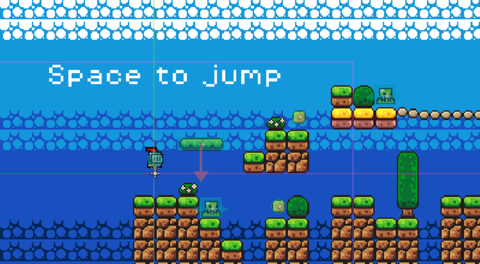

First Game
| Type | 2D Platformer |
| Status | archived |
| Engine | Godot 4.4 |
| Language | GDScript |
| Renderer | Forward Plus |
| Repository | GitHub |
Overview
First Game is a basic 2D platformer made in Godot 4.4 as an introduction to game development.
The goal was to get familiar with Godot's node system, TileMap for level layout, and GDScript basics. It is not a finished or polished game.
Background music is autoloaded. Textures use nearest-neighbour filtering, suggesting a pixel art style.
Controls
- Move left — A or Left Arrow
- Move right — D or Right Arrow
- Jump — Space
Structure
The project follows a standard Godot layout with separate folders for assets, scenes, and scripts.
assets/— sprites and audioscenes/— Godot scene files including the music autoloadscripts/— GDScript logic
Screenshots

Development Notes
This was a single-commit snapshot made while following along with Godot fundamentals — nodes, TileMap, input handling, and scene structure.
Kept in the archive as a reference point, not as a representative project.